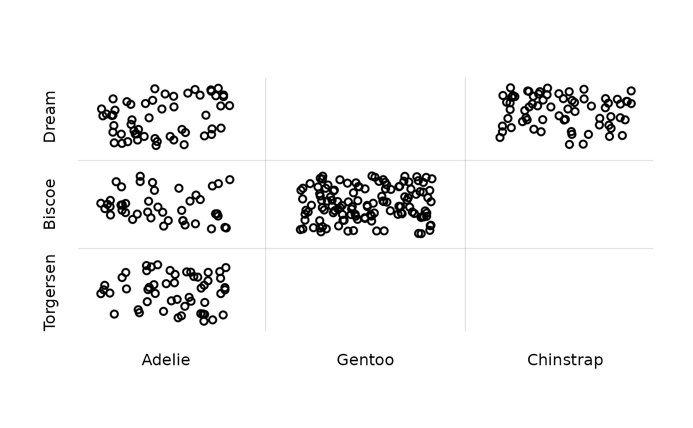
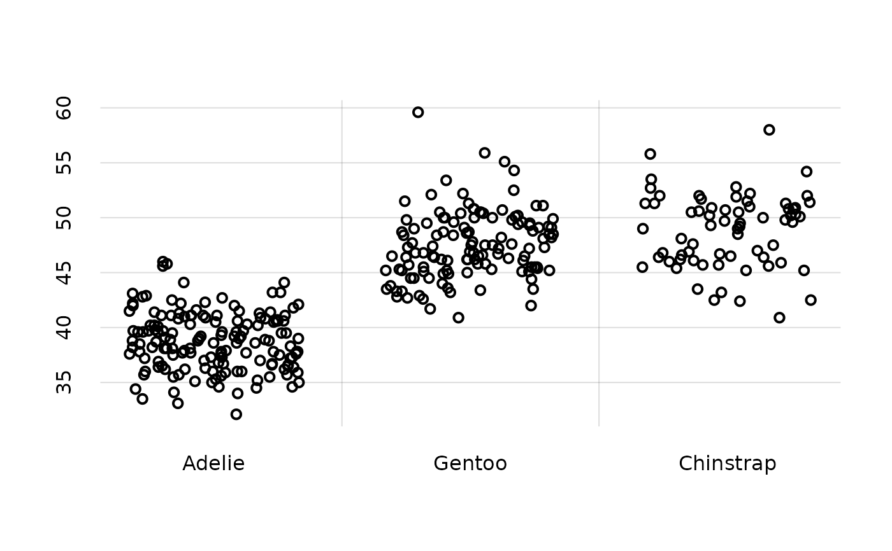
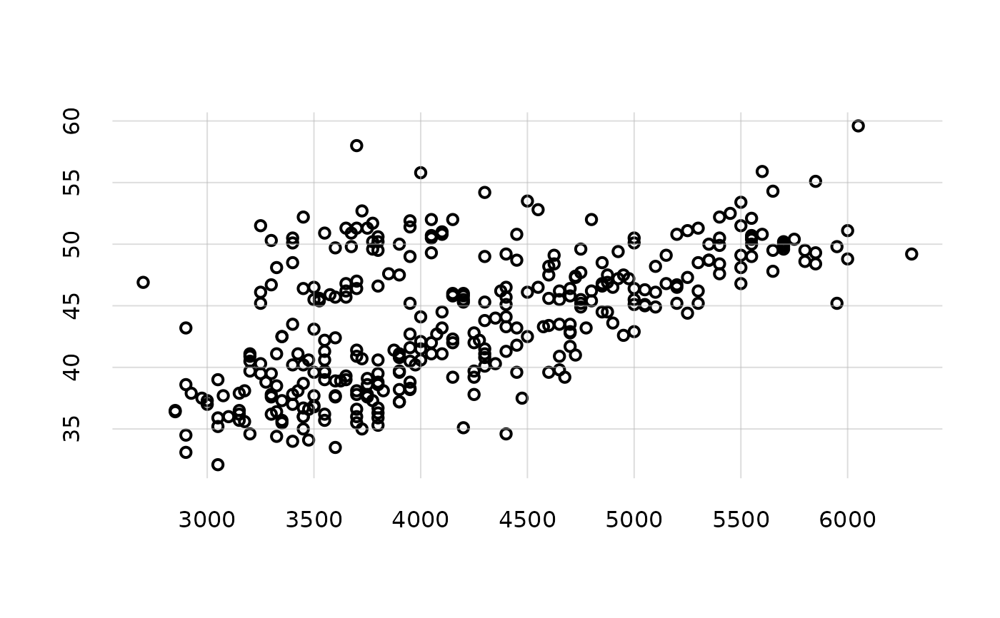
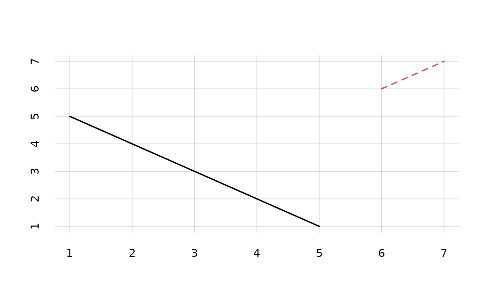
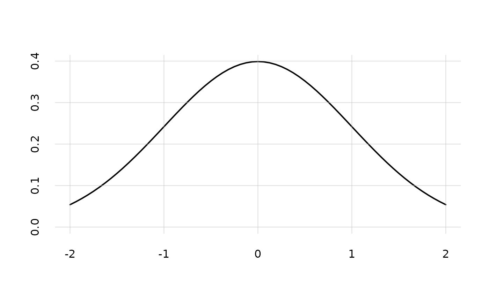
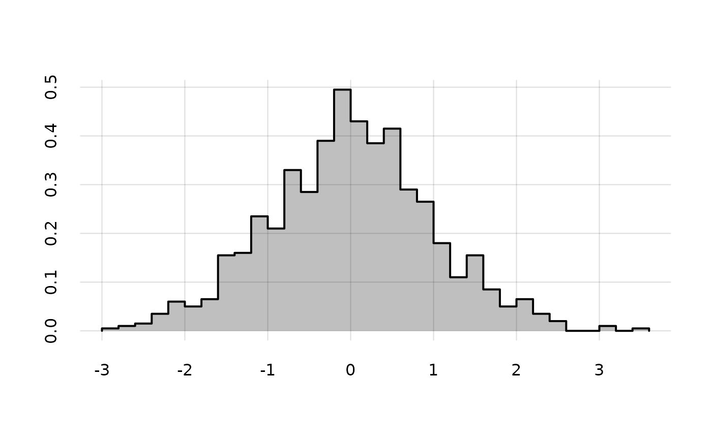

Plot function that modifies and expands the graphics package's graphics::matplot() function in several ways.
Usage
pplot(
x = NULL,
y = NULL,
type = NA,
lty = c(1, 2, 4, 3, 6, 5),
lwd = 2,
lend = par("lend"),
pch = c(1, 2, 0, 5, 6, 3),
col = palette(),
xlab = NA,
ylab = NA,
xlim = NULL,
ylim = NULL,
add = FALSE,
xdomain = NULL,
ydomain = NULL,
alpha.f = 1,
xjitter = NA,
yjitter = NA,
fill = NA,
alpha.f.fill = 0.25,
grid = TRUE,
lwd.grid = NULL,
col.grid = "#00000022",
axes = FALSE,
cex.main = 1,
...
)Arguments
- x
Numeric or character or list: vectors of x-coordinates. If an element of
xis missing, a numeric vector1:...is created having as many values as the rows of the corresponding element iny.- y
Numeric or character or list: vectors of y-coordinates. If an element of
yis missing, a numeric vector1:...is created having as many values as the rows of the corresponding element inx.- type
Character vector or list indicating the type of plot for each element of
xandy. The types of plot are the same as inbase::plot(), in particular'p'for points,'l'for lines,'b'for both points and lines,'c'for empty points joined by lines,'o'for overplotted points and lines, “n'for empty plot. Additional special types'hx'`, `'qx'`, `'hy'`, `'qy'` are available for plotting histograms and quantile bands; see "Details".- lty, lwd, pch, lend, col, xlab, ylab, add, axes, cex.main
see analogous arguments in
graphics::matplot()andgraphics::plot.default(); defaults are different (see "Usage").- xlim, ylim
NULL(default) or a vector of two values. If non-NULLand any of the two values is not finite (includingNAorNULL), then theminormaxx- ory-coordinates of the plotted points are used.- xdomain, ydomain
Character or numeric or
NULL(default): vector of possible values of the variates represented in thex- andy-axes, in case thexoryargument is a character vector. Note that the domains apply to all elements inxandy. The ordering of the values is respected. IfNULL, thenunique(x)orunique(y)is used.- alpha.f
Numeric vector or list, default
1: opacity of the line or contour colours,0being completely invisible and1completely opaque.- xjitter, yjitter
Vector or list of logicals or
NA(default): addbase::jitter()tox- ory-values? Useful when plotting discrete variates. IfNA, jitter is added if bothxandyare of character (or factor) class.- fill
Logical or
NA(default). For histogram plots (type = 'hx'or'hy'), valueTRUEmeans fill the histogram, and do not plot its contour;FAlSEmeans plot only its contour without filling;NAmeans plot contour and fill. For quantile plots (type = 'qx'or'qy'), valueTRUEdo not plot the bands' contours;FAlSEmeans plot only the contours without filling;NAplots a contour only when the quantile band has zero area (and would be invisible otherwise).- alpha.f.fill
Numeric vector or list, default
0.25: opacity of the filling colours,0being completely invisible and1completely opaque.- grid
Logical, default
TRUE: plot a light grid?- lwd.grid
Numeric, default 1: width of grid lines.
- col.grid
Color of grid lines, default
'#00000022'. Can be specified in any of the usual ways, see for instancegrDevices::col2rgb().- ...
Other parameters to be passed to
graphics::matplot().
Value
NULL, invisibly; produces a plot, see graphics::matplot().
Details
This function is essentially a wrapper around graphics::matplot(), augmenting the latter with some features useful for plotting data and probabilities handled by Prova. Some of the additional features provided by pplot are the following:
Either or both
xandyarguments can be lists. In this case, the first element ofxis plotted against the first element ofy, and so on, recycling as necessary. This allows for plots having different numbers of base points. The specifications in arguments liketype,lty,col,alpha.f,xjitter, and similar apply to each list element in turn.Argument
x, or each element inxif it is a list, can be of classbase::character. In this case, x-axis labels as given inxdomainare used, or the unique values inxifxdomainisNULL. Similarly foryandydomain. This feature makes it easier to plot nominal and ordinal non-numeric variates.Additional plot
types are available:'hx','qx','hy','qy'(internally they usegraphics::polygon()):'hx'plots shaded histograms. Argumentxmust be a list ofbreaks, andya list ofcountsordensities, for example produced by bygraphics::hist().'qx'plots shaded bands. The first band extends from the line defined by the first column ofy, to the line defined by the last column; the second band is similarly delimited by the second and second-last columns ofy, and so on (ifyhas an odd number of columns, the central one defines a line rather than a band). The x-values are the corresponding columns ofx, recycled if necessary. This plottypeis useful for plotting quantile bands calculated withPr().'hy','qy'are analogoustypes, but with the roles ofxandyswitched.
A jitter can be added to each plot, via the
xjitterandyjittervectors of switches. When either of these arguments isNA, it is internally assessed whether jitter is necessary. This feature makes it easier to generate scatter plots of nominal, ordinal, or rounded-continuous variates.It is possible to specify only a lower or upper limit in the
xlimandylimarguments, letting the other limit to be found automatically. This feature is useful in plotting probabilities and histograms, when we want to specify the lower as0but want the upper limit to be the the maximum probability.Transparency of lines or markers can be specified through argument
alpha.f.Some defaults are different from
base::plot()andgraphics::matplot().
See the package's vignettes for more examples.
See also
Pr() to calculate posterior probabilities and quantiles.
plot.probability() to directly plot posterior probabilities and quantiles contained in a probability object.
hist.probability() to plot the revisability of the probabilities as a distribution.
Examples
## Scatter plot of 'island' vs 'species' variates of the 'penguins' dataset;
## note how jitter is automatically added:
pplot(x = penguins[, 'species'], y = penguins[, 'island'])

## Scatter plot of 'bill_len' vs 'species':
pplot(x = penguins[, 'species'], y = penguins[, 'bill_len'])

## Scatter plot of 'bill_len' vs 'body_mass';
## in this case the scatter-plot `type = 'p'` must be specified:
pplot(x = penguins[, 'body_mass'], y = penguins[, 'bill_len'], type = 'p')

## Plot y-values having different numbers of x-values
pplot(x = list(1:5, 6:7), y = list(5:1, 6:7))

## Specify only the minimum plotting range
xgrid <- seq(from = -2, to = 2, length.out = 65)
pplot(x = xgrid, y = dnorm(xgrid), ylim = c(0, NA))

## Draw a shaded histogram
histo <- hist(rnorm(1000), breaks = 'FD', plot = FALSE)
pplot(x = histo$breaks, y = histo$density, type = 'hx')
